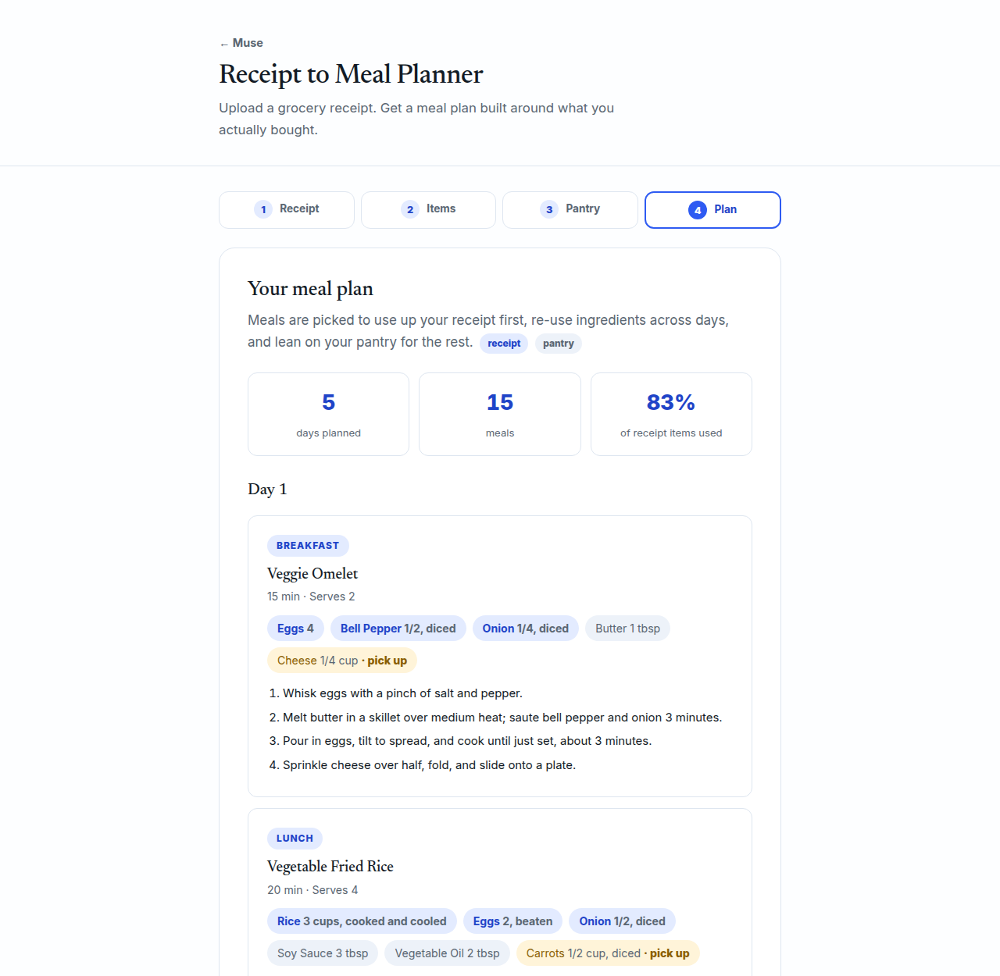

Receipt to Meal Planner
Upload a grocery receipt and get a day-by-day meal plan built around what you actually bought. It reads the receipt with on-device OCR, lets you fix up the item list, factors in your pantry staples, and then plans breakfasts, lunches, and dinners that re-use ingredients across meals so nothing goes to waste. Anything the plan needs that you don't have lands on a tidy shopping list.